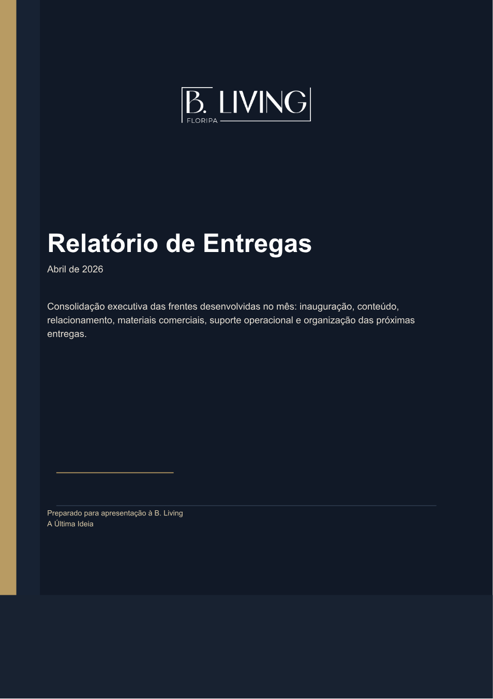

Território antes de imóvel
Começar pela ilha, pelo bairro, pela escassez e pelo futuro. O empreendimento entra como consequência da leitura estratégica.
Brand kit operacional
Uma marca imobiliária com presença de evento, leitura territorial e relacionamento consultivo. O visual precisa parecer sólido o bastante para falar com investidores, mas próximo o bastante para sustentar WhatsApp, Reels, convites e encontros presenciais.
Registro de marca: premium territorial, sem parecer genérico de luxo. A B. Living deve falar menos como vitrine de imóveis e mais como uma casa de inteligência imobiliária, relacionamento e oportunidade em Florianópolis.
Começar pela ilha, pelo bairro, pela escassez e pelo futuro. O empreendimento entra como consequência da leitura estratégica.
Wine & Living, inauguração e encontros privados devem parecer parte do posicionamento, não peças soltas de agenda social.
O tom comercial é direto, mas sustentado por dados, contexto urbano, timing de mercado e confiança pessoal.
Estratégia: paleta completa com azul profundo como sala de reunião, dourado como assinatura institucional, argila para material humano e sálvia para território, mapa e futuro.
Direção recomendada: contraste entre uma serifada clássica para autoridade e uma sans limpa para operação diária. No browser, este kit usa Georgia e Segoe UI como substitutas seguras, mas a compra ideal seria uma serifada editorial mais proprietária para o “B.” e chamadas.
Ilha como ativo futuro.
Use a sans em textos comerciais, legendas, relatórios, checklists e páginas de RSVP. O corpo deve ser claro, com frases curtas, evitando “luxo” vazio. O luxo da marca está na leitura, na curadoria e no acesso.
O lockup funciona melhor com bastante respiro. Evite fundos fotográficos muito complexos, sombras decorativas e versões com efeitos. O contraste entre linha fina, serifado e azul profundo já carrega a sofisticação.
Três direções rápidas para Instagram, convite e apresentação. Cada uma mantém a marca reconhecível sem repetir o mesmo layout em todas as peças.
Use dourado dominante, foto de detalhe e texto mínimo. CTA sempre por confirmação.
Use azul dominante, mapas, linhas finas e títulos com cadência institucional.
Use fundo claro, imagens amplas e legenda orientada por oportunidade.
Blocos prontos para manter consistência em post, WhatsApp, convite e apresentação. Clique para copiar.
B. Living Floripa: inteligência imobiliária para ler a ilha antes de escolher o imóvel.
Um encontro para aproximar mercado, relacionamento e oportunidades reais em Florianópolis.
Mais do que imóveis, leitura de território, escassez, infraestrutura e futuro.

Este kit respeita a direção já usada no relatório de entregas: azul profundo, dourado lateral, logotipo branco e linguagem executiva.
assets/page-01.pngIlha como ativo futuroWine & Living, RSVP, Reels